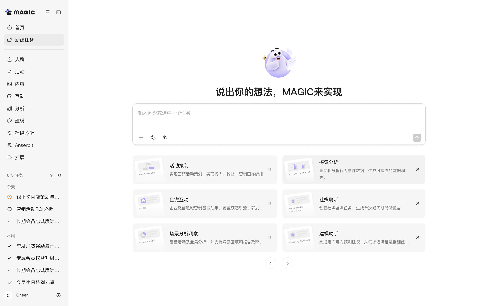
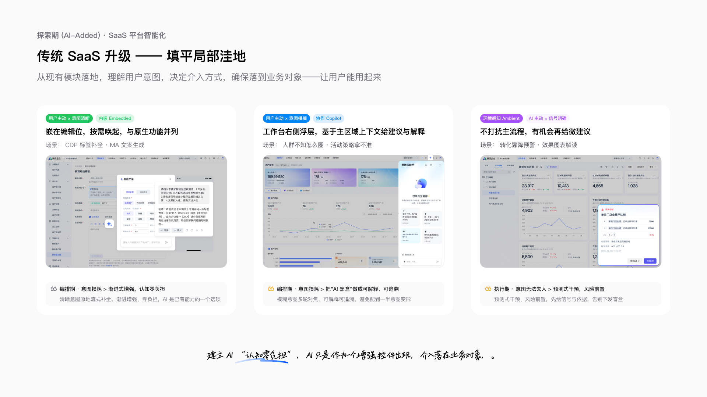
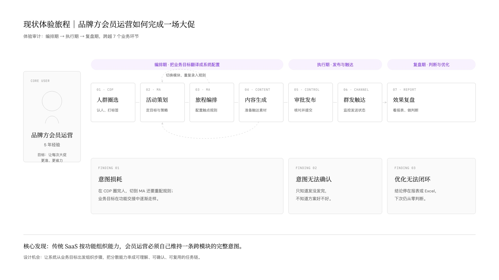
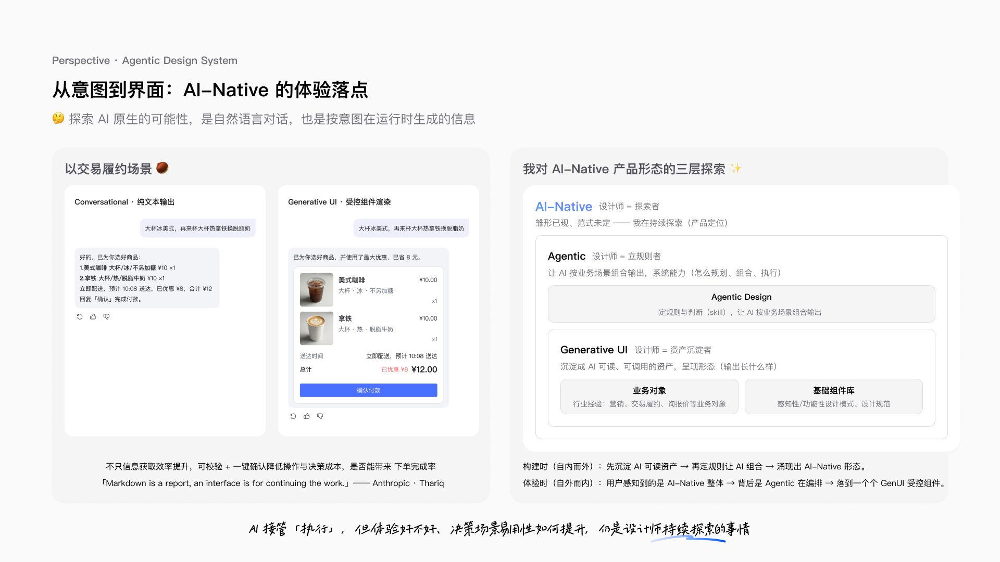

设计系统 · Foundation v6
与站点共用 assets/tokens.css + assets/style.css；改 token = 全站与本页同时变化。完整规范见 WEB-DESIGN-SYSTEM.md。图标：Lucide（ISC，本地 sprite）。衬线标题 Noto Serif SC 500（--fw-display），正文与中文控件 DM Sans，章节编号、页码、代码与数值使用 IBM Plex Mono。
基础 Token
① primitive 原始值 → ② semantic 语义 → ③ component 组件 → ④ interaction 交互参数。断点和主题只覆盖语义层。运行时由 JS 写入、不在表里的：--nav-progress、--compare-pos。节奏令牌：--space-page-top / --space-section / --space-section-lg / --space-title / --page-inset / --fs-hero-name / --topbar-h。
① primitive（55）
| token | value |
|---|---|
--p-white | #fff |
--p-gray-50 | #f4f4f4 |
--p-ink | #171717 |
--p-ink-a64 | rgba(23,23,23,.64) |
--p-ink-a45 | rgba(23,23,23,.45) |
--p-ink-a12 | rgba(23,23,23,.12) |
--p-ink-a05 | rgba(23,23,23,.05) |
--p-white-a20 | rgba(255,255,255,.2) |
--p-white-a97 | rgba(255,255,255,.97) |
--p-purple-500 | #A855F7 |
--p-purple-700 | #7E3AF2 |
--p-amber-700 | #B45309 |
--p-amber-50 | #FFFBEB |
--p-shadow-a12 | rgba(0,0,0,.12) |
--p-shadow-a14 | rgba(0,0,0,.14) |
--p-font-serif | "Noto Serif SC","Noto Serif CJK SC","Source Han Serif SC","Songti SC","STSong","SimSun",serif |
--p-font-sans | "DM Sans","PingFang SC","HarmonyOS Sans SC","Microsoft YaHei","Noto Sans SC",-apple-system,"Segoe UI",sans-serif |
--p-font-mono | "IBM Plex Mono","SF Mono","JetBrains Mono",Menlo,Consolas,monospace |
--p-fs-12 | 12px |
--p-fs-13 | 13px |
--p-fs-14 | 14px |
--p-fs-16 | 16px |
--p-fs-17 | 17px |
--p-fs-20 | 20px |
--p-fs-24 | 24px |
--p-fs-28 | 28px |
--p-fs-32 | 32px |
--p-fs-40 | 40px |
--p-fs-48 | 48px |
--space-1 | 4px |
--space-2 | 8px |
--space-3 | 12px |
--space-4 | 16px |
--space-5 | 24px |
--space-6 | 32px |
--space-7 | 48px |
--space-8 | 64px |
--space-9 | 96px |
--space-10 | 120px |
--space-11 | 160px |
--space-12 | 180px |
--p-size-72 | 72px |
--p-size-104 | 104px |
--p-radius-4 | 4px |
--p-radius-10 | 10px |
--p-radius-16 | 16px |
--p-radius-22 | 22px |
--p-radius-full | 999px |
--p-dur-160 | 160ms |
--p-dur-220 | 220ms |
--p-dur-260 | 260ms |
--p-dur-300 | 300ms |
--p-dur-500 | 500ms |
--p-ease-standard | cubic-bezier(.2,.8,.2,1) |
--p-ease-expo | cubic-bezier(.22,1,.36,1) |
② semantic（100）
| token | value |
|---|---|
--color-bg | var(--p-white) |
--color-surface | var(--p-white) |
--color-surface-sunken | var(--p-gray-50) |
--color-fg | var(--p-ink) |
--color-fg-2 | var(--p-ink-a64) |
--color-fg-3 | var(--p-ink-a45) |
--color-line | var(--p-ink-a12) |
--color-hover | var(--p-ink-a05) |
--color-accent | var(--p-purple-500) |
--color-accent-text | var(--p-purple-700) |
--color-inverse-bg | var(--p-ink) |
--color-inverse-fg | var(--p-white) |
--color-inverse-line | var(--p-white-a20) |
--color-scrim | var(--p-white-a97) |
--color-placeholder | var(--p-amber-700) |
--color-placeholder-bg | var(--p-amber-50) |
--font-serif | var(--p-font-serif) |
--font-sans | var(--p-font-sans) |
--font-mono | var(--p-font-mono) |
--font-serif-mixed | var(--p-font-serif) |
--fs-hero | var(--p-fs-40) |
--lh-hero | 1.25 |
--fs-h1 | var(--p-fs-32) |
--lh-h1 | 1.3 |
--fs-h2 | var(--p-fs-24) |
--lh-h2 | 1.4 |
--fs-h3 | var(--p-fs-20) |
--lh-h3 | 1.45 |
--fs-body | var(--p-fs-17) |
--lh-body | 1.75 |
--lh-read | 1.85 |
--fs-small | var(--p-fs-14) |
--lh-small | 1.6 |
--fs-label | var(--p-fs-13) |
--lh-label | 1.5 |
--ls-label | .04em |
--fs-mono | var(--p-fs-12) |
--ls-mono | .08em |
--fs-stat | var(--p-fs-48) |
--lh-stat | 1.1 |
--lh-snug | 1.3 |
--lh-tight | 1 |
--fw-light | 300 |
--fw-regular | 400 |
--fw-medium | 500 |
--fw-bold | 700 |
--fw-display | 400 |
--space-block | var(--space-9) |
--space-hero | var(--space-12) |
--gap-item | 40px |
--gap-section | var(--space-9) |
--gutter | 32px |
--header-offset | 96px |
--col-label | 240px |
--w-content | 1040px |
--w-media | 1440px |
--w-page | 1200px |
--w-home | 780px |
--w-col | 680px |
--w-cv | 960px |
--w-cv-line | 34em |
--cv-label | 40% |
--cv-body | 60% |
--cv-label-md | 30% |
--cv-body-md | 70% |
--w-read | 720px |
--w-media-read | 1040px |
--radius-sm | var(--p-radius-4) |
--radius-md | var(--p-radius-10) |
--radius-pill | var(--p-radius-full) |
--radius-round | 50% |
--shadow-float | 0 2px 10px var(--p-shadow-a12) |
--shadow-pop | 0 8px 30px var(--p-shadow-a14) |
--size-touch | 44px |
--icon-sm | 16px |
--icon-md | 20px |
--icon-stroke | 1.5 |
--avatar-lg | 56px |
--avatar-md | 48px |
--ring-focus-w | 2px |
--ring-focus-offset | 3px |
--ease | var(--p-ease-standard) |
--ease-emph | var(--p-ease-expo) |
--dur-fast | var(--p-dur-160) |
--dur-base | var(--p-dur-300) |
--dur-slow | var(--p-dur-500) |
--dur-morph | var(--p-dur-260) |
--z-content | 1 |
--z-nav | 30 |
--z-pill | 45 |
--z-overlay | 50 |
--z-overlay-ui | 55 |
--z-sheet | 70 |
--space-page-top | var(--space-10) |
--space-section | var(--space-10) |
--space-section-lg | var(--space-11) |
--space-title | var(--space-6) |
--page-inset | var(--space-6) |
--fs-hero-name | 32px |
--topbar-h | calc(var(--size-touch) + var(--space-2) * 2)}
@media(max-width:767px){:root{--space-page-top:var(--space-8) |
③ component（29）
| token | value |
|---|---|
--nav-ring-w | 2px |
--nav-ring-gap | 3px |
--nav-ring-color | var(--color-fg) |
--nav-ring-track | var(--color-line) |
--nav-panel-w | 240px |
--nav-panel-radius | var(--p-radius-22) |
--dock-h | 44px |
--dock-offset | 20px |
--hero-pt | calc(var(--size-touch) + var(--space-2)) |
--work-mt | var(--space-7) |
--card-w | 640px |
--card-ratio | 16/9 |
--card-radius | var(--p-radius-16) |
--card-pad | var(--space-4) |
--card-bg | var(--color-surface-sunken) |
--card-border | var(--color-line) |
--card-off-scale | .9 |
--card-pill-h | 36px |
--card-pill-dur | var(--p-dur-220) |
--card-pill-ease | var(--ease-emph) |
--card-pill-shift | 6px |
--card-pill-shadow | var(--shadow-float) |
--rail-gap | 32px |
--rail-pad-end | 80px |
--toc-w | 200px |
--glen-hero-scale | 1.5 |
--glen-hero-inset | calc(-18 / 128) |
--glen-spell-palette | #e53935,#f57c00,#c9a227,#43a047,#1e88e5,#3949ab,#8e24aa |
--nav-list-top | var(--page-inset) |
④ interaction（28）
| token | value |
|---|---|
--ix-scroll-lerp | .1 |
--ix-scroll-wheel | 1 |
--ix-rail-lerp | .12 |
--ix-rail-wheel-mult | .6 |
--ix-rail-tp-mult | 1 |
--ix-rail-tp-lerp | .35 |
--ix-rail-tp-max | 40 |
--ix-rail-power | .2 |
--ix-rail-time | 400 |
--ix-rail-snap-v | 400 |
--ix-rail-idle | 150 |
--ix-rail-snap-dur | 500 |
--ix-rail-max-cards | 1 |
--ix-rail-snap | 1 |
--ix-rail-snap-zone | 24 |
--ix-rail-drag-th | 6 |
--ix-nav-reveal-scale | .9 |
--ix-glen-eye-max | 8.2 |
--ix-glen-eye-dx | 8.5 |
--ix-glen-eye-dy | .2 |
--ix-glen-eye-lerp | .18 |
--ix-glen-eye-range | .65 |
--ix-glen-near | 28 |
--ix-glen-near-ratio | .55 |
--ix-glen-wave-dur | 620 |
--ix-glen-wave-deg | 18 |
--ix-glen-wave-peak | .4 |
--ix-nav-list-shift | calc(var(--size-touch) + var(--space-5)) |
全局样式
令牌用出来的样子：颜色、字体、间距、圆角与阴影、动效、图标。
颜色 Color
--color-bg--color-surface--color-surface-sunken--color-fg--color-fg-2--color-fg-3--color-line--color-hover--color-accent--color-inverse-bg--color-inverse-fg--color-inverse-line--color-scrim--color-accent-text--color-placeholder--color-placeholder-bg字体层级 Type
7 级字阶（约 1.2 比例）+ 等宽、数字两个特例。展示字重统一 --fw-display（400，Noto Serif SC）；正文 ≥17px 可用 300，≤14px 一律 400/500；行高随字号递减；移动端只缩 hero/h1/h2/h3/stat，正文保持 18px。首页名字另用 --fs-hero-name（32 / 24）。
hero · 40 / 28px
--fs-hero / --lh-hero
serif display张耕 · 首页名字 / 详情标题
h1 · 32 / 24px
--fs-h1 / --lh-h1
serif display简历姓名 · 引言 · 结语
h2 · 24 / 20px
--fs-h2 / --lh-h2
serif display区块与章节标题 近期作品
h3 · 20 / 17px
--fs-h3 / --lh-h3
sans 400营销云 MAGIC Agent · 条目标题
body · 18px
--fs-body / --lh-body
sans 300正文：把营销「工具配置」升级为意图驱动的人机协作，零售连锁私域转化率 +45%。
small · 14px
--fs-small / --lh-small
sans 400次要文字 · 按钮 · 元信息
label · 13px
--fs-label / --lh-label
sans 500栏目标签 · 工作经历
mono · 12px
--fs-mono / --lh-label
mono 400CORE DESIGN · 2021 — 2025
stat · 48 / 32px
--fs-stat / --lh-stat
serif display+45%
间距 Spacing
--space-1--space-2--space-3--space-4--space-5--space-6--space-7--space-8--space-9--space-10--space-11--space-12圆角与阴影 Radius / Shadow
--radius-sm--radius-md--nav-panel-radius--card-radius--radius-pill--shadow-float--shadow-pop动效 Motion
点击 / 悬停下方区域播放（遵循 prefers-reduced-motion）。
--dur-fast · --ease--dur-base · --ease--dur-morph · --ease-emph--card-pill-dur · --card-pill-ease--dur-slow · --ease-emph图标 Icons（24 栅格 · stroke 1.5 · 20 / 16px · currentColor）
i-arrow-lefti-arrow-righti-arrow-up-righti-chevron-downi-xi-layout-gridi-playi-listi-move-horizontali-folderi-pen-linei-file-texti-maili-message-circlei-map-pini-download组件
可复用的界面零件。导航、卡片、按钮、对比和目录都在这里。
可点击链接 Links（v6.links）
--link-ul-w · --link-ul-offset · --link-ul-color · --link-fg · .u / .work-btn / .card-pill可点击文字常驻 1px 下划线（灰），hover/focus 只变灰→黑，不用 accent。作品标题保持近黑；「查看案例」「完整简历」用衬线正文、无箭头。dock / 菜单不受影响。
NavButton + NavPanel
.nav .nav-btn · .nav-panel(.on) · .nav-home / .nav-menu / .nav-mode左上 44px 圆钮 + 进度环（--nav-progress；环色 --nav-ring-color = --color-fg）。hover 只抬阴影，不再 scale（避免进度环发糊）。展开面板从钮心轻微放大淡入，描边 + pop 阴影；菜单项统一圆角，hover 浅底。Case 01 不展开面板，点击直达首页。
代码来源（只认这些，不跟外部站像素对齐）：
· 样式：assets/style.css 中「NavButton + NavPanel」一段（token：--nav-*、--size-touch、--shadow-*）
· 逻辑：首页 assets/main.js（回顶 + 进度）；详情 assets/detail.js（开合面板 / 章节 / 幻灯片）
· 骨架：templates/detail.html、case-02/03.html；Case 01 在页内覆写为直达返回
· 灵感备注：形态参考过 cv.rocorgi.wang 的圆钮+进度环，不是引入对方组件/CSS；颜色、字号、圆角、动效全部走本站 token
左侧可点开合；右侧为闭合态（首页头像钮示意）。
NavReveal（首页）
.nav[data-mode="home"](.is-hidden) · --ix-nav-reveal-scale首页：首屏头像 .hero .avatar 在视口内时，左上按钮隐藏（opacity 0、scale(--ix-nav-reveal-scale)、不可点、aria-hidden、tabindex -1）；头像离开视口后用 --dur-base / --ease 淡入并恢复原尺寸，无位移。点击平滑回顶（减少动效时直接跳），进度环照常。详情页及其他页面左上按钮始终显示。
Logo（glen）：左上按钮与首屏头像同为 svg.glen（#glen-face + .glen-eyes + .glen-wand）。眼珠跟随指针（--ix-glen-eye-max / -lerp / -range），指针进入 #dock 时往上看；靠近 logo（--ix-glen-near / -near-ratio）魔杖向右挥 --ix-glen-wave-deg 18° 再收回（--ix-glen-wave-dur 620ms，--ix-glen-wave-peak 40% 处到顶），离开后可再触发。首屏头像额外出现「Lumos !」：头像四周随机位置、--glen-spell-palette 彩虹七色随机，--dur-base 淡入，离开即消失。首屏尺寸 --avatar-lg × --glen-hero-scale(1.5)，左缘内收 --glen-hero-inset 对齐标题。触屏 / 减少动效时全部静止。
NavList（≥1024）
#dock.dock @media(min-width:1024px) · --nav-list-top首页桌面端导航：左侧竖排纯文字（列宽 44px、居中，与 logo 中线对齐），固定在 logo 槽位下方。未选中使用 --color-fg-2，当前项与悬停使用 --color-fg；隐藏图标，「作品」子菜单向右展开。统一断点：≥1024px 为桌面导航。
TopBar（≤1023）
#dock.dock @media(max-width:1023px) · --topbar-h首页紧凑导航：1023px 及以下切换为顶部横排文字，字号 16px；与桌面左侧导航共用中文衬线字体和颜色状态，未选中使用 --color-fg-2，当前项与悬停使用 --color-fg。高度由 --topbar-h 与 safe-area 共同决定，使用浅色半透明背景；logo 显示时整体左移留出位置，「作品」子菜单向下展开。
MediaCard + CardPill
.rail > .card > figcaption + .card-media > img + a.card-pill横排轨道内的媒体卡；图片不是链接（光标 grab），只有悬停出现的「查看案例 →」药丸可点；触屏常显；focus-visible 可见描边。下方示例强制显示药丸。

查看案例WorkTitle + ViewSwitcher
.view-bar > h2.work-h(.en) + .view-switch「近期作品」与 工作 / 想法 同为 h2，共用 .cv>h2 的字体字号；视图切换包在 .view-ctl 内，紧跟标题右侧（gap 12px，垂直居中），菜单在按钮下方左对齐展开。各分区标题不再带英文副标题。
ViewSwitcher
.view-bar .view-switch .view-menu近期作品 网格 / 列表 切换（menuitemradio，localStorage 记忆）。
HeroTags
ul.hero-tags > li首页首屏与简历弹层头部的专长标签：胶囊描边（--radius-pill / --color-line），文字 --fs-small（简历内 --fs-label），不带图标、不可点击。
CvSection
.cv > h2(.en) + div > .cv-entry / .cv-xp / .cv-morerocorgi 双栏：左标题 30%（≥1200 40%），右内容；<880 单栏。
工作
- 腾讯 · CSIG 产品体验设计师2021 — 至今
- 喜马拉雅 UI 设计师2018 — 2021
ResumeSheet 触发
[data-resume] / a[href="#resume"] → .sheet任意带 data-resume 的链接打开全屏简历阅读层（#resume 深链、锁滚动、焦点陷阱、Esc/关闭）。底部 .sheet-bar：关闭 / 下载 PDF。
StatCard
.case .stat-grid > .stat详情页数字卡（3 列；移动端 3 列紧凑）。
私域转化率
启动期 GMV
研发成本降低
PullQuote
.quote > p + cite左侧强调色细线 + serif 大字。
AI 执行提升平均值，人的坚持思考是点亮差异的灯塔
— 示例引用
CompareSlider
.compare > img + img.compare-top + .compare-handle + input[range]拖动或键盘调整 --compare-pos（JS 写入）；把手图标 i-move-horizontal。


BeforeAfterTocSidebar / Case01 TocRail
.toc · .toc-list a(.on) · .toc-mode · body.c1 --c1-rail-*统一断点：≥1024px 使用左侧章节目录；≤1023px 收入顶部按钮，点击展开目录抽屉。选中章节保持高亮，目录可滚动，选择章节后回到正文。幻灯片各尺寸均使用网格按钮与章节浮层；1024px 处只调整舞台留白及浮层可用宽度，不切换目录形态。
Lightbox 触发
img[data-zoom] → #lb (.lb-close .lb-prev .lb-next .lb-count)点击带 data-zoom 的图片打开灯箱；← → / 滑动切换，点击图片放大，Esc / 关闭按钮（.btn-close）退出。

IconButton / CloseButton
.icon-btn · .btn-close统一的圆形图标按钮（44px 触控）；三处关闭（灯箱 / 幻灯片 / 简历）统一 .btn-close + i-x + aria-label「关闭…（Esc）」。
页面范式
一页怎么排：首页节奏、案例章节、结构图、演示版和场景回放。Case 01 正文结构图用直角版。
首页节奏 Spacing rhythm
--space-page-top · --space-section · --space-section-lg · --space-title · --page-inset桌面：页面顶距 120 / 分区间距 120 / 大分区间距 160（首屏→近期作品、结语上）/ 标题到内容 32 / 左上 logo 与竖排导航边距 --page-inset 32。移动（<768）：64 / 64 / 96 / 24。工作、想法、联系用 --space-section。左上竖排导航默认 top = left = --page-inset；logo 显示时整列 translateY(--ix-nav-list-shift = 44+24)。窄屏 <1024 改为顶部 TopBar（--topbar-h）。
顶距 120
张耕 Glen
做 AI Agent 产品体验
大区间 160
近期作品
标题到内容 32
案例章节节奏 Case chapter rhythm
.c1-chapter-label · .chap-head h2 · .fig figcaption每章：章节标识（等宽编号 + 无衬线章名，不用装饰点分隔）→ 观点型主标题（衬线）→ 1–2 段说明 → Demo/图示 → 弱引用图注（2px 左边线、左内边距 12px）。章内媒体间距 16–20px，章间保留大停顿。结构图 1920×1080，文章版与演示版共用。
01 产品与体验
MAGIC AI：让每一次营销，都成为下一次增长的经验
从营销工具集合，到智能增长操作系统。 真正困难的是把数据、策略和执行组织成可以重复使用的增长能力。
MAGIC AI 三层结构：上层承接目标，中层形成判断，下层完成执行。
结构图 Structure diagram
示意图模板-圆角版 · 示意图模板-直角版 · 1920×1080两版共用比例：左右边距 96px，左栏 300px，三行同高。表格管结构（左标签 + 十字分割线），右侧内容是卡片。圆角版：灰底白卡、圆角 18px、Buddy 紫，适合界面类示意。直角版：直角黑线框、重点黑卡、中文主标题宋体、英文与副文案黑体；Case 01 正文用这一版。源文件在网站规范，此处为设计系统入口。
Case01 DeckMode
case-01-deck.html · assets/case-01-deck.css/.js案例详情统一用图集幻灯片。Case 01 另有独立演示版：结构化幻灯，逐页讲产品结构、问题、策略和验证。
Demo 场景回放（magic-demo.html）
assets/demo.css · assets/demo.js · .demo-frame / .demo-bar / .demo-rail / .demo-chat · .demo-msg(.user/.agent) / .demo-tool / .demo-act / .demo-sep · .demo-card(-h) / .demo-row / .demo-chip / .demo-btn(.pri) · .demo-scenes / .demo-rule + .demo-toggle(.off) / .demo-tier(.merged) / .demo-journey + .demo-node(.edit) / .demo-posters + .demo-poster(.sel/.flag) / .demo-status / .demo-funnel + .demo-fn(.drop) / .demo-check(.on) · .demo-ctl + .demo-prog + .demo-count · .demo-annDataBuddy 体验馆式回放：左侧重绘的产品窗口（步骤栏 + 对话流），右侧设计注释；下方播放 / 暂停、上一步 / 下一步、8 段进度（可点跳转）、重播。自动播放：逐条淡入（--dur-base，位移 4px），Agent 文字轻量逐字，步骤停留 4.8s；减少动效时不自动播放、无动画。标黄（.flag/.drop）用 --color-placeholder。<1024 隐藏步骤栏，注释移到下方。数据全部虚构。
帮我做一场秋冬换季老客召回
先确认计划，再匹配策略、圈人，并生成可执行旅程。